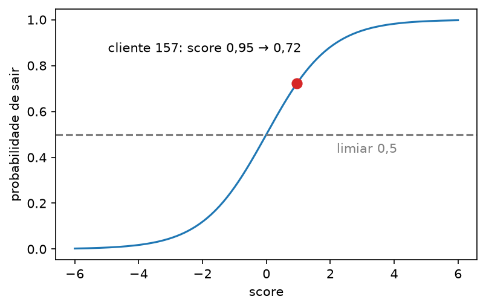
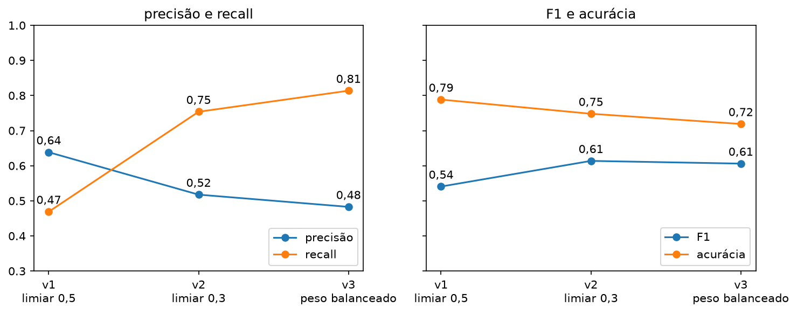

Prever “sai” ou “fica” com regressão logística, medir os erros e escolher qual erro dá para tolerar
Aula ML 0315/10Classificaçãoaula gravada
Use →← · M índice · P PDF · F tela cheia
Lembrando as aulas 1 e 2
Número ou categoria?
Regressão · aula 2a resposta é um número: quantos litros de cerveja num dia.
Classificação · aulas 1 e 3a resposta é uma opção de uma lista: a espécie do pinguim, ou “sai / fica”.
pergunta
resposta
tipo
Quantos litros amanhã?
um número
regressão
Qual é a espécie do pinguim?
1 de 3 opções
classificação
Este cliente vai cancelar?
sim ou não
classificação (hoje)
Com os pinguins, o modelo deu uma chance para cada espécie e ficou com a maior. Hoje são só duas opções, e a gente vai decidir onde cortar.
O caso de hoje
Quem vai cancelar?
Churn
Cliente que cancela o contrato. A operadora quer saber antes quem vai sair, para ligar e oferecer algo.
Erro 1 · deixar passaro cliente ia sair, o modelo disse “fica”. Ninguém liga. Cliente perdido.
Erro 2 · alarme à toao cliente ia ficar, o modelo disse “sai”. A empresa liga sem precisar. Gasta tempo e desconto.
Os dois erros custam coisas diferentes. No fim da aula, vamos escolher qual deles tolerar.
caderno 01Telco Customer Churn · Kaggle · uma linha = um cliente
O arquivo
tenure meses de casa
MonthlyCharges conta do mês
TotalCharges total já pago
Contract contrato
Churn saiu?
1
29,85
29,85
Month-to-month
No
34
56,95
1.889,50
One year
No
2
53,85
108,15
Month-to-month
Yes
7.043 clientes21 colunas no arquivo. Usamos 4 para prever, mais o alvo Churn.
Valores em US$contrato: mensal (Month-to-month), 1 ano ou 2 anos.
26,6% saíram1.869 de 7.032 clientes. 73,4% ficaram. Quem sai é minoria: 1 em cada 4.
As primeiras três linhas do arquivo. As outras 17 colunas (serviços, forma de pagamento…) ficam de fora para o modelo caber na cabeça.
caderno 01Só o necessário para o modelo rodar
Limpeza mínima
1
TotalCharges veio como texto, com 11 células vazias. Vira número, e essas 11 linhas saem: 7.043 → 7.032.
2
Churn vira número: Yes → 1 (saiu) e No → 0 (ficou). O modelo só faz conta com números.
3
Contract é texto. Vira 3 colunas de 0 e 1: mensal, 1 ano, 2 anos. Um cliente mensal fica 1, 0, 0.
4
As 3 colunas numéricas vão para a mesma escala, como na aula 1: meses são dezenas, o total pago chega a milhares.
Os passos 3 e 4 ficam dentro do pipeline: o teste passa pelo mesmo caminho do treino.
caderno 01Separar antes de treinar · 75% e 25%
Treino e teste, estratificado
Treino · 5.274 clienteso modelo aprende aqui: vê as 4 colunas e se o cliente saiu.
Teste · 1.758 clientesa prova: o modelo não viu. Todas as métricas da aula saem daqui.
treino% que sai
26,6%
teste% que sai
26,6%
Estratificar = sortear mantendo a mesma % de quem sai nos dois lados. Sem isso, o teste podia cair com mais ou menos gente que sai, e a nota mudaria por sorte. Semente fixa: todo mundo sorteia igual.
Duas contas: score e probabilidade
Regressão logística
Passo 1 · o score
a mesma soma da reta da aula 2: x = colunas do cliente · w = pesos aprendidos · b = ponto de partida
Passo 2 · a sigmoide
score negativoprobabilidade abaixo de 0,5
score = 0probabilidade exatamente 0,5
score positivoprobabilidade acima de 0,5
caderno 01Cliente 157 do teste · o modelo nunca viu este cliente
Um cliente, do começo ao fim
4 colunas2 meses de casa US$ 95,65/mês US$ 167,30 no total contrato mensal
→
score 0,95a soma de peso × coluna
→
0,72sigmoide: 1 / (1 + e−0,95)
→
≥ 0,5passa do limiar
→
“vai sair”classe 1

Na vida real, este cliente saiu. O modelo acertou.
caderno 01Os pesos w do treino · causa → efeito
O que empurra para sair
coluna
peso
o que quer dizer
meses de casa
−1,23
mais meses de cliente → menos chance de sair
conta do mês
+0,73
conta mais cara → mais chance de sair
total já pago
+0,39
empurra um pouco para sair
contrato mensal
+0,55
sem fidelidade → mais chance de sair
contrato de 1 ano
−0,60
menos chance de sair
contrato de 2 anos
−1,30
bem menos chance de sair
O cliente 157 tem poucos meses, conta alta e contrato mensal: quase tudo empurra para “sai”. Por isso o score dele deu positivo (0,95).
Peso + empurra para “sai”, peso − empurra para “fica”. Como as colunas estão na mesma escala, dá para comparar o tamanho dos pesos.
cadernos 01 e 03De probabilidade para decisão
Limiar: onde cortar
Limiar
Probabilidade maior ou igual ao limiar → “vai sair”. Abaixo → “fica”. O padrão é 0,5.
cliente do teste
probabilidade de sair
com limiar 0,5
na vida real
157 · 2 meses, US$ 95,65, mensal
0,72
“sai” ✓
saiu
248 · 6 meses, US$ 50,80, mensal
0,42
“fica” ✗
saiu
O cliente 248 saiu, mas 0,42 ficou abaixo do corte: o modelo deixou passar. O 0,5 é uma escolha, não uma lei. Mais adiante, a gente muda o limiar e vê o que acontece.
caderno 01Os 1.758 clientes do teste · limiar 0,5
A acurácia que mente
Acurácia
Acertos ÷ total. De cada 100 clientes do teste, quantos o modelo acertou?
regressão logísticao nosso modelo
0,78878,8%
chutar “fica”para todo mundo
0,73473,4%
Quem diz “fica” para todo mundo já acerta 73,4%, porque 73,4% dos clientes ficam. E esse chute não encontra nenhum cliente que sai. A acurácia sozinha não mostra isso → precisamos olhar os erros.
caderno 02Os 1.758 clientes do teste · limiar 0,5
Matriz de confusão
modelo disse “fica”
modelo disse “sai”
ficou
1.167acertou quem fica
124alarme à toa
saiu
248deixou passar
219acertou quem sai
Linhas = o que aconteceu. Colunas = o que o modelo disse.
Diagonal = acertos: 1.167 + 219 = 1.386. E 1.386 ÷ 1.758 = 0,788, a acurácia.
Fora da diagonal, os dois erros do slide 3.
467 clientes saíram de verdade. O modelo pegou 219 e deixou passar 248: mais da metade.
caderno 02Olha só a coluna “modelo disse sai”
Precisão
Em uma frase
Dos que eu disse que saem, quantos saíram mesmo?
Neste modeloo modelo deu 343 alertas. De cada 100 alertas, cerca de 64 eram clientes que iam sair.
Precisão altapoucos alarmes à toa: quando o modelo avisa, costuma ser verdade.
caderno 02Olha só a linha “saiu”
Recall
Em uma frase
Dos que saíram, quantos eu peguei?
Neste modelo467 clientes saíram. De cada 100 que saíram, o modelo pegou cerca de 47.
Recall baixomuita gente sai sem ninguém avisar. Aqui, 248 clientes.
caderno 02Precisão e recall num número só
F1
F1
Por que não a média simples?o F1 cai muito se um dos dois for baixo. Exemplo de conta: precisão 1,0 e recall 0,1 → média 0,55, mas F1 só 0,18.
Quando usarquando ninguém disse qual erro custa mais: o F1 cobra os dois lados ao mesmo tempo.
limiar 0,5
acurácia
precisão
recall
F1
o modelo do caderno 02
0,788
0,638
0,469
0,541
caderno 03O mesmo modelo, três cortes · 467 clientes saíram no teste
Mudar o limiar
limiar
alertas
desses, saíram
precisão
recall
0,7 · corte alto
26
21
0,81
0,05
0,5 · padrão (v1)
343
219
0,64
0,47
0,3 · corte baixo (v2)
680
352
0,52
0,75
Limiar mais baixo → mais alertas → pega mais gente que sai (recall ↑), mas mais alertas são à toa (precisão ↓).
O cliente 248 (probabilidade 0,42) passava batido com 0,5. Com 0,3, ele vira “sai”: agora o alerta pega.
caderno 03Mexer no treino, não no corte · limiar 0,5 nos dois
Peso da classe
Peso balanceado
No treino, errar um cliente que sai passa a custar quase 3 vezes mais do que errar um que fica, porque eles são só 1 em 4.
sem peso (v1)
peso balanceado (v3)
acertou quem sai
219
380
deixou passar
248
87
alarme à toa
124
407
precisão
0,64
0,48
recall
0,47
0,81
O modelo aprende a dar probabilidades mais altas para quem parece que vai sair. Efeito parecido com baixar o limiar: recall ↑, precisão ↓.
cadernos 02 e 03Experimento churn · pasta mlruns
Uma run por tentativa
v1 · limiar 0,5o modelo do caderno 02, sem peso. O ponto de partida.
v2 · limiar 0,3mudou só o limiar. O modelo é o mesmo.
v3 · peso balanceadovolta ao 0,5 e muda só o peso no treino.
cada run grava
nesta aula
parâmetros
colunas de entrada, limiar, peso
métricas
acurácia, precisão, recall, F1
dataset e modelo
o CSV e o modelo treinado
Mudar uma coisa por vez: assim dá para saber o que causou cada mudança nos números. O comando que abre a interface está no fim do caderno 03.
caderno 03Números lidos de volta do MLflow
De v1 a v3

Recall 0,47 → 0,81, precisão 0,64 → 0,48. A acurácia caiu (0,79 → 0,72), mas o F1 subiu (0,54 → 0,61). A acurácia mais alta não é o modelo mais útil.
Antes de comemorar um número
Qual erro tolerar?
Perder cliente custa mais
Ex.: o cliente paga todo mês, e uma ligação é barata.
Olhe o recall.
v3: pega 380 dos 467 que saem.
Preço: 407 ligações à toa.
Ligar à toa custa mais
Ex.: a oferta é um desconto grande, caro para a empresa.
Olhe a precisão.
v1: 64% dos alertas são de verdade.
Preço: 248 clientes saem sem aviso.
A regra: primeiro decida qual erro custa mais. Depois escolha a métrica. Só então escolha a run. Se ninguém decidiu, use o F1.
O que a aula fez, com os números
Resumo
Perguntaeste cliente vai sair?
Dados7.032 clientes · 26,6% saem
Separaçãoestratificada · 5.274 / 1.758
Modelologística: score → probabilidade
Limiarprobabilidade → “sai” ou “fica”
Medirmatriz, precisão, recall, F1
01-treinolimpar, separar, treinar, um cliente, acurácia contra o chute.
02-mlflowmatriz de confusão, precisão, recall, F1, e a run gravada.
03-compararv1, v2, v3 no MLflow e o gráfico da evolução.
Alvo sim ou não, com uma classe rara: a acurácia engana. Olhe a matriz e escolha a métrica pelo custo do erro.
Exportar os slides para PDF
Destino: Salvar como PDF. Margens: nenhuma. Gráficos de segundo plano: ativado.